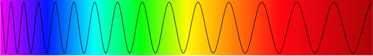
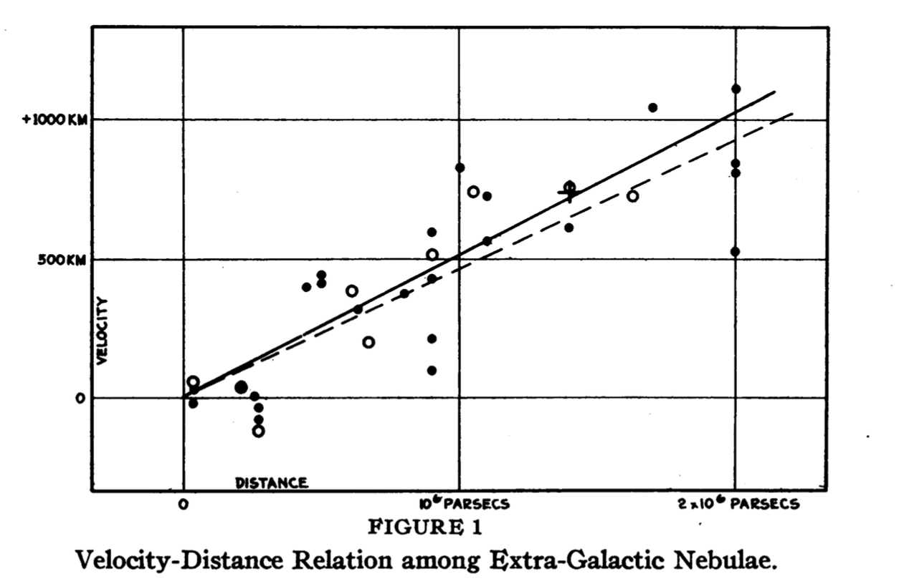
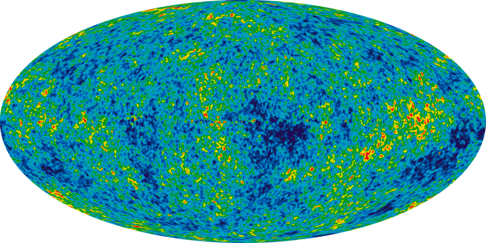

Light travels through space at a constant speed as a wave. When we see color, what distinguishes one color from another is the wavelength and frequency of its light. Shorter wavelengths have higher frequencies and higher energy, like the blue light wave below. Longer wavelengths result in lower frequencies and lower energy, similar to the red light wave below.
The total distribution of all these different frequencies creates a spectrum of light. We can see colors distributed from blue at the short-wavelength high-frequency end of the spectrum to red at the long-wavelength low-frequency end of the spectrum, and all the colors in between. Frequencies extend far beyond the pictured visible spectrum, from low-energy radio waves and microwaves to high-energy x-rays and gamma rays.
The Doppler shift is an effect we observe in sources of waves that are moving. Waves are compressed in the direction of motion and are spaced further apart in the opposite direction. For example, the sound of a fire siren approaching you is different than the sound it makes heading away from you. That’s because when it moves towards you, the sound waves are compressed and we hear them at a higher frequency (or pitch). When the siren is heading away from you, the waves are spread further apart, resulting in a lower pitch.
In the area below, click and drag your mouse to create waves like you might in a pond. See if you can recreate the Doppler shift by moving your mouse in one direction, compressing the waves in that direction and spreading them out behind you.
When we apply the Doppler shift to light, the light waves are compressed in the direction of motion and are spaced further apart in the opposite direction. The result is that objects moving towards us appear to have shorter wavelengths (and therefore higher frequencies) than they actually do, shifting the light we observe towards the blue end of the spectrum. This is called blueshift. The opposite effect, redshift, occurs when an object moves away from us — its waves appear spread apart, giving the impression of a longer wavelength and lower frequency that is shifted towards the red end of the spectrum.
In 1923, astronomer Edwin Hubble discovered that there are galaxies outside of our own Milky Way galaxy. Before this, it was thought that our galaxy was the entirety of the universe, but Hubble’s distance calculations revealed objects that were too far away to be within our galaxy, and were actually other galaxies outside of the Milky Way.
Hubble went on to plot the distance to these galaxies against their redshifts, which showed how fast and in which direction the galaxies were moving relative to us. When Hubble published his results in 1929, they revealed something even more startling than his original discovery — the redshift of galaxies increased in proportion to their distance from us. This is known as Hubble’s Law, and it means the farther away from us a galaxy is, the faster it is moving away from us.
Even more troubling, Hubble found that his law applied in every direction — everything was moving away from us. One might conclude that this means we are in the center of something special, but in fact, we know the universe to be isotropic, meaning that on large enough scales, any position or direction in space isn’t favored in any way over any other position or direction. Because there is nothing special about our location in the universe, Hubble’s observations could be extended and applied to any other point in the universe. That is, from any perspective, everything would be appear to be moving away from you, meaning on a large scale, everything is moving away from everything else. This expansion also explains the observed redshift of distant galaxies — as the universe expands, the light waves that occupy it are being stretched, leading to longer wavelengths and lower frequencies, giving us an observable redshift that increases with distance to those galaxies.
Hubble’s Law is direct evidence for the expansion of our universe. Click and drag the example patch of the universe below to expand it to simulate moving forwards in time and expanding. Notice that from any one perspective, it appears all the other objects are moving away from you as this part of the universe expands. Imagine this expansion as points on the surface of a balloon. Just as the surface of the balloon expands everywhere into a larger surface, the universe doesn’t expand from any central point or in any particular direction — everything expands and moves away from everything else.
Now try contracting the universe to simulate going backwards in time. If everything is moving away from us and the universe is expanding, this must mean that if we went backwards in time, everything would contract and the universe would shrink to smaller and smaller sizes. If we go back far enough, we reach the Big Bang, the moment at the beginning of time when the entirety of the space and energy of the universe was compressed into a single, unfathomably dense and energetic point.
The slope of the plot of Hubble’s Law describes the rate of expansion of the universe, which we call Hubble’s Constant. Using this rate of expansion, we can estimate the time it would take for the universe to expand from its singularity at the Big Bang to its current size just by taking the inverse of Hubble’s Constant, giving us an estimate of 14.4 billion years for the age of the universe. True calculations for the age of the universe take into account more measurements, but Hubble’s Constant provides a great estimate, and ever-increasing amounts of data from galaxies and other distant objects in the universe have continued to strengthen Hubble’s discoveries.
Hubble's discovery and the Big Bang theory have been supported by other indicators in the universe. Imagine a high-energy light wave in the dense and energetic early universe. As it traveled through space and time, the wave would be stretched slowly, leading to a longer wavelength and lower frequency over a long period of time. Today, those light waves left over from the Big Bang are detectable as low-energy microwave radiation, which propagates uniformly in every direction all around us in what is called the Cosmic Microwave Background, which was discovered in 1964 and is a direct indicator of the Big Bang. Through the Cosmic Microwave Background, we can probe the earliest stages of the universe, showing just how far we’ve come since Hubble’s time.
{kind=link}